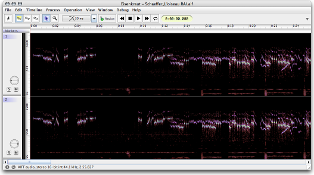

This tab currently only holds the settings for the sonagramme analysis.
The sonagramme functionality in version 0.70 is incomplete and experimental, therefore this option is disabled by default. Enabling the option brings up a new item "Frequency Spectrum" in the View->Vertical Scale menu. If you select this vertical scale option, a sonagramme is calculated and displayed in the document window.
Note that currently the sonagramme is neither cached (so will need to be recalculated each time you open a file) nor decimated (meaning display will be very slow and also inaccurate if you zoom out a lot). Also there is no way to change the analysis settings of a document after you have opened it – you will need to close the document, adjust the preference settings, and re-open the document.
The sonagramme is calculated with a constant-Q transform, yielding a logarithmic frequency resolution. At the moment you cannot zoom into the sonagramme's frequency axis, so in some cases you might want to restrict the frequency range that is analysed, by changing the settings for "Lowest Frequency" and "Highest Frequency". Note that the highest frequency is automatically trimmed to the Nyquist frequency (sample rate divided by two).
The speed of the sonagramme calculation is intrinsically linked to the settings of "Bands per Octave", "Max. Time Resolution" and "Max. FFT Size". The higher the bands per octave, the more filters need to be applied, but also the higher the «Q» of the filters gets in order to achieve narrow frequency bands, resulting in longer filter coefficients and slower calculation time.
The same is true for the "Lowest Frequency" setting: the lower the value is chosen, the longer the bass register filters need to be, the slower the calculation. A pragmatic tradeoff is to limit the Q of the bass filters by choosing a maximum FFT size: For example, a maximum FFT size of 8192 means that no matter how many filter coefficients we would need to produce a proper filter for a given lowest frequency and Q (bands-per-octave), the filter will be made no longer than 8192 taps, so effectively you are reducing the frequency resultion of the bass filter but you get a much faster analysis.
The maximum time resolution specifies the window-step size of the analysis and it linearly affects the calculation time. Note that you cannot get infinitely fine time resolution because time resolution naturally decreases with increased frequency resolution, so you only get the highest time resolution for high frequencies while the low frequencies exhibit greater time smearing, no matter how fine you choose the time resolution.
Here is a screenshot of a sonagramme view for the beginning of Pierre Schaeffer's «L'oiseau RAI» from 1950:
